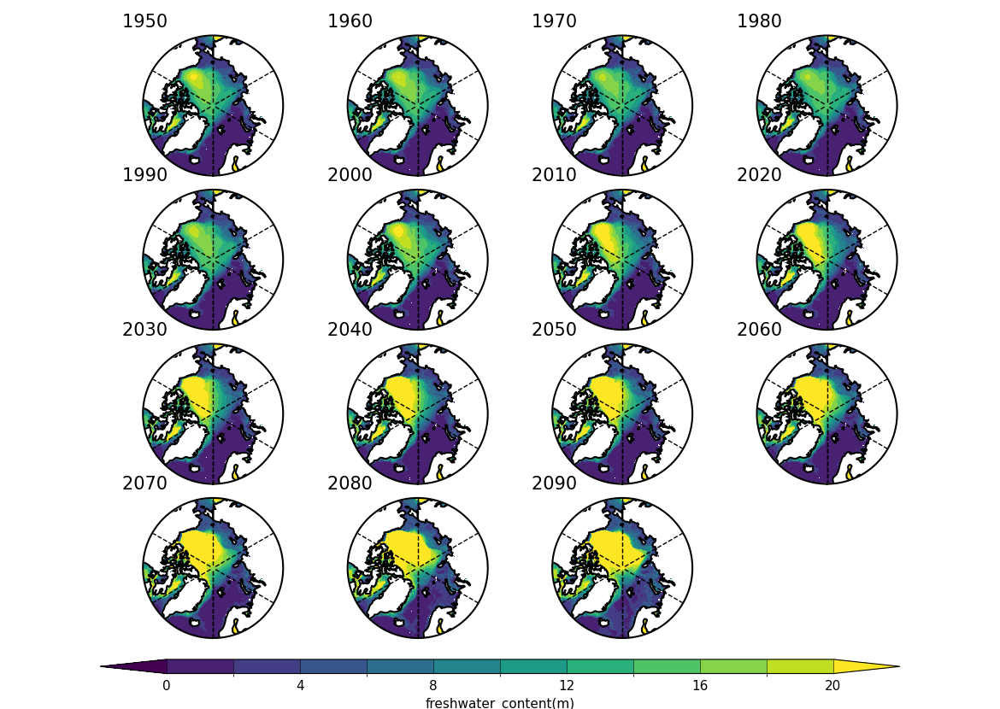

⬅ Back to gallery

CANARI ensemble mean Fresh Water Content (Sref=38.4) arctic (>70N) decadal means
/gws/nopw/j04/canari/users/dlrhodso/spring2025/analysis/FWC/CANARI_arctic_ensemble_mean_FWC_decadal_means.png